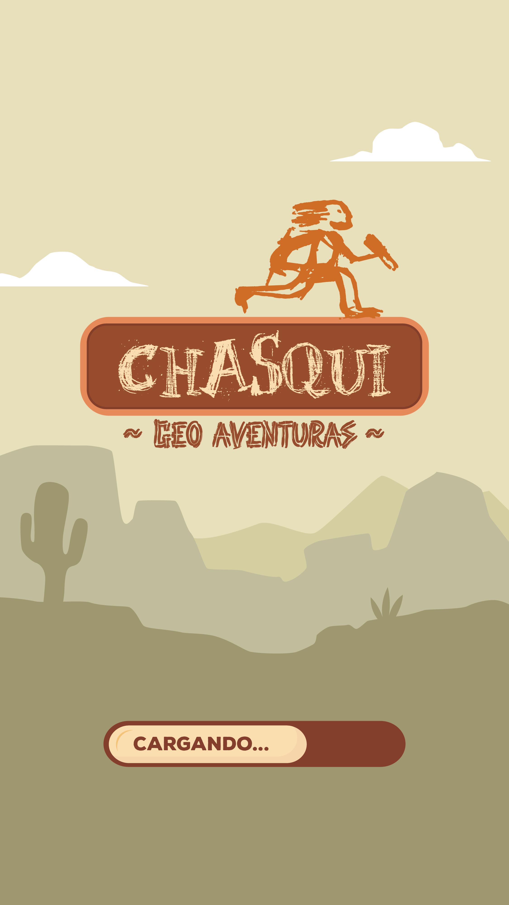

“Recorre las cuatro regiones de Jujuy y condecórate como visitante premium”
“El Juego”

¿ PORQUÉ CHASQUI ?
Porque tiene:
Beneficios por recorrer los distintos puntos de Interés Culturales
Beneficios por recorrer la provincia de una manera didáctica
Porque:
Pueden obtener POAPs y coleccionarlos ya que son certificados que validan un recorrido turístico
Pueden buscar las mascotas Virtuales y sacarse fotos con ella
Pueden terminar el recorrido turístico y canjearlos por vouchers.....
Puntos de interés cultural
© 2023 Copyright, todos los derechos reservados